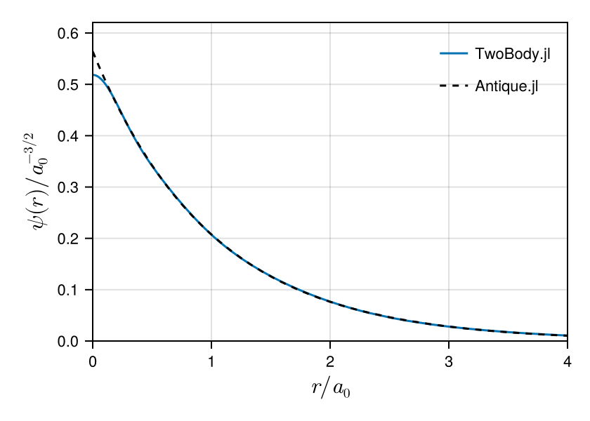

TwoBody.jl


TwoBody.jl: A Julia package for solving quantum-mechanical two-body problems
TwoBody.jl provides a flexible framework for constructing two-body Hamiltonians and solving the corresponding Schrödinger equation using a variety of numerical methods. It covers approaches ranging from basis-set and grid methods to tensor-network, stochastic, and neural-network methods. Beyond serving as a proof of concept for FewBody.jl, TwoBody.jl is designed to support practical, cross-scale calculations of quantum two-body systems, from hadrons to molecules.
Install
Run the following command in the Julia REPL or a notebook:
import Pkg; Pkg.add("TwoBody")Usage
Run the following code before each use.
using TwoBodyDefine the Hamiltoninan. This is an example for the non-relativistic Hamiltonian of hydrogen atom in atomic units:
\[\hat{H} = - \frac{1}{2} \nabla^2 - \frac{1}{r}\]
H = Hamiltonian(
Kinetic(hbar = 1, m = 1),
Coulomb(coefficient = -1),
)The usage depends on the method. Define the basis set for the Rayleigh-Ritz Method:
\[\begin{aligned} \phi_1(r) &= \exp(-13.00773 ~r^2), \\ \phi_2(r) &= \exp(-1.962079 ~r^2), \\ \phi_3(r) &= \exp(-0.444529 ~r^2), \\ \phi_4(r) &= \exp(-0.1219492 ~r^2). \end{aligned}\]
BS = BasisSet(
SimpleGaussianBasis(13.00773),
SimpleGaussianBasis(1.962079),
SimpleGaussianBasis(0.444529),
SimpleGaussianBasis(0.1219492),
)You should find
\[E_{n=1} = -0.499278~E_\mathrm{h},\]
which is amazingly good for only four basis functions according to Thijssen(2007). The exact ground-state energy is $-0.5~E_\mathrm{h}$.
julia> solve(H, BS)# method Rayleigh-Ritz method with SimpleGaussianBasis{Float64} J. Thijssen, Computational Physics 2nd Edition (2013) https://doi.org/10.1017/CBO9781139171397 # basis function φ₁(r) = TwoBody.φ(SimpleGaussianBasis{Float64}(a=13.00773), r) φ₂(r) = TwoBody.φ(SimpleGaussianBasis{Float64}(a=1.962079), r) φ₃(r) = TwoBody.φ(SimpleGaussianBasis{Float64}(a=0.444529), r) φ₄(r) = TwoBody.φ(SimpleGaussianBasis{Float64}(a=0.1219492), r) # eigenfunction ψ₁(r) = + 0.096102φ₁(r) + 0.163017φ₂(r) + 0.185587φ₃(r) + 0.073701φ₄(r) ψ₂(r) = + 0.119454φ₁(r) + 0.081329φ₂(r) + 0.496216φ₃(r) - 0.205916φ₄(r) ψ₃(r) = - 0.010362φ₁(r) + 1.744891φ₂(r) - 0.629196φ₃(r) + 0.097774φ₄(r) ψ₄(r) = - 6.155100φ₁(r) + 1.240202φ₂(r) - 0.226412φ₃(r) + 0.030780φ₄(r) # eigenvalue E₁ = -0.49927840566748605 E₂ = 0.11321392045798521 E₃ = 2.5922995719598148 E₄ = 21.1443651901225 # verification n norm, <ψₙ|ψₙ> = cₙ' * S * cₙ = 1 1 1.0 2 1.0000000000000004 3 0.9999999999999998 4 0.9999999999999988 n ill-conditioned, |<ψₙ|H|ψₙ> - E| = |cₙ' * H * cₙ - E| = 0 1 2.7755575615628914e-16 2 1.1657341758564144e-15 3 3.1086244689504383e-15 4 1.4210854715202004e-14 # expectation value n hamiltonian, <ψₙ|H|ψₙ> = cₙ' * H * cₙ 1 -0.49927840566748577 2 0.11321392045798638 3 2.5922995719598116 4 21.144365190122485 n expectation value of Kinetic(hbar=1, m=1) 1 0.4992783686700062 2 0.8428088332141163 3 4.4326566087314445 4 26.465623640332108 n expectation value of Coulomb(coefficient=-1) 1 -0.9985567743374919 2 -0.7295949127561298 3 -1.840357036771633 4 -5.321258450209621
The wave function is also good. However, the Gaussian basis does not satisfy the Kato’s cusp condition.
# solve
res = solve(H, BS)
# benchmark
import Antique
HA = Antique.HydrogenAtom(Z=1, Eₕ=1.0, a₀=1.0, mₑ=1.0, ℏ=1.0)
# plot
using CairoMakie
fig = Figure(size=(420,300), fontsize=11, backgroundcolor=:transparent)
axis = Axis(fig[1,1], xlabel=L"$r / a_0$", ylabel=L"$\psi(r) / a_0^{-3/2}$", ylabelsize=16.5, xlabelsize=16.5, limits=(0,4,0,1.1/sqrt(π)))
lines!(axis, 0..5, r -> abs(TwoBody.ψ(res,r)), label="TwoBody.jl")
lines!(axis, 0..5, r -> abs(Antique.wavefunction(HA, r, 0, 0)), linestyle=:dash, color=:black, label="Antique.jl")
axislegend(axis, position=:rt, framevisible=false)
fig
Hydrogen atom benchmark
The following table compares the two lowest $s$-wave energies of the hydrogen atom in atomic units. Here $n=0$ denotes the ground state and $n=1$ the first excited state. The numerical values use the example settings from the corresponding method pages: 20 Gaussian functions for RR, the nine-function complement basis ($M_n=9$) for FC, $\Delta r=0.1$ and $r_\mathrm{max}=50$ for FDM, the default 1024-point grid ($\mathtt{quantics}=10$) for QTT+DMRG, and the documented training or sampling settings for VNN and VMC. A dash indicates that the state is not currently available.
| Method | $n=0$ | $n=1$ |
|---|---|---|
| RR | -0.499981735104 | -0.124997703473 |
| FC | -0.499999999978 | -0.123665583532 |
| FDM | -0.498756211209 | -0.124921972504 |
| QTT+DMRG | -0.499702911360 | -0.124981415403 |
| VNN | -0.468779111883 | — |
| VMC | -0.480218518855 | — |
| Exact | -0.500000000000 | -0.125000000000 |
API reference
TwoBody.BasisTwoBody.BasisSetTwoBody.ComplexGaussianBasisTwoBody.ConstantTwoBody.ContractedBasisTwoBody.CoulombTwoBody.CustomTwoBody.DatabaseEntryTwoBody.DeltaTwoBody.ExponentialTwoBody.FiniteDifferenceMethodTwoBody.GaussianTwoBody.GaussianBasisTwoBody.GeometricBasisSetTwoBody.HamiltonianTwoBody.KineticTwoBody.KineticTermTwoBody.LaplacianTwoBody.LinearTwoBody.OperatorTwoBody.PotentialTermTwoBody.PowerLawTwoBody.PowerSlaterBasisTwoBody.PrimitiveBasisTwoBody.QTTMatrixTwoBody.QTTVectorTwoBody.QuanticsTensorTrainMethodTwoBody.RelativisticCorrectionTwoBody.RelativisticKineticTwoBody.RestEnergyTwoBody.SimpleGaussianBasisTwoBody.TabulatedTwoBody.VariationalMonteCarloTwoBody.VariationalNeuralNetworkTwoBody.YukawaBase.put!TwoBody.ComplexGaussianBasisSetTwoBody.FCTwoBody.dbTwoBody.dbkeysTwoBody.elementTwoBody.elementTwoBody.elementTwoBody.elementTwoBody.elementTwoBody.elementTwoBody.elementTwoBody.elementTwoBody.elementTwoBody.elementTwoBody.elementTwoBody.geometricTwoBody.local_energyTwoBody.matrixTwoBody.matrixTwoBody.matrixTwoBody.matrixTwoBody.matrixTwoBody.matrixTwoBody.matrixTwoBody.optimizeTwoBody.optimizeTwoBody.optimizeTwoBody.orderTwoBody.qttvalueTwoBody.ranksTwoBody.solveTwoBody.solveTwoBody.solveTwoBody.solveTwoBody.solveTwoBody.solveTwoBody.solveTwoBody.solveTwoBody.solveTwoBody.φTwoBody.φTwoBody.φTwoBody.φpTwoBody.φpTwoBody.φpTwoBody.ψpTwoBody.ψp